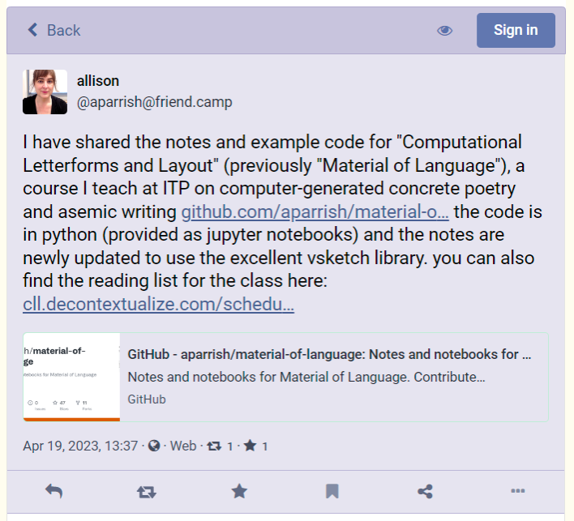

2023-04-19 Wednesday
08:37 Visually distinguished internal links with a little CSS / SASS trickery
article {
a[href^="/"] {
&::before {
content: '[[';
}
&::after {
content: ']]';
}
}
}
Hypothetically, that will add wiki-style open and close markers to local links which appear inside note pages and note excerpts. It’s not a 100% solution, which would only mark note links in that way, but I need to do a little folder structuring for that to work.
13:41 Tab Bankruptcy
See the websites that make AI bots like ChatGPT sound so smart - Washington Post
https://friend.camp/@aparrish/110227399095340106 collapsed:: true

GitHub - aparrish/material-of-language: Notes and notebooks for Material of Language
Computational Letterforms and Layout (Schedule, Spring 2023)
Computational Letterforms and Layout
Language is more than just words and meanings. Language is material: it’s paper and ink, pixels and screens, fingertips on keyboards. In this course, students will gain an understanding of how language’s material manifestations are represented digitally, and learn computational techniques in order to create new work and new systems that challenge conventions in type design and page layout. Topics include asemic writing, concrete poetry, markup languages, character encodings, generative typography, and printing technologies (including pen plotters). Readings and lectures in the class draw from the fields of computation, critical theory, literary studies, art history, mathematics and graphic design. A series of production-oriented assignments lead up to a final project. In addition to critique, sessions will feature class discussions and technical tutorials.
Getting syntax highlighting in my public brain